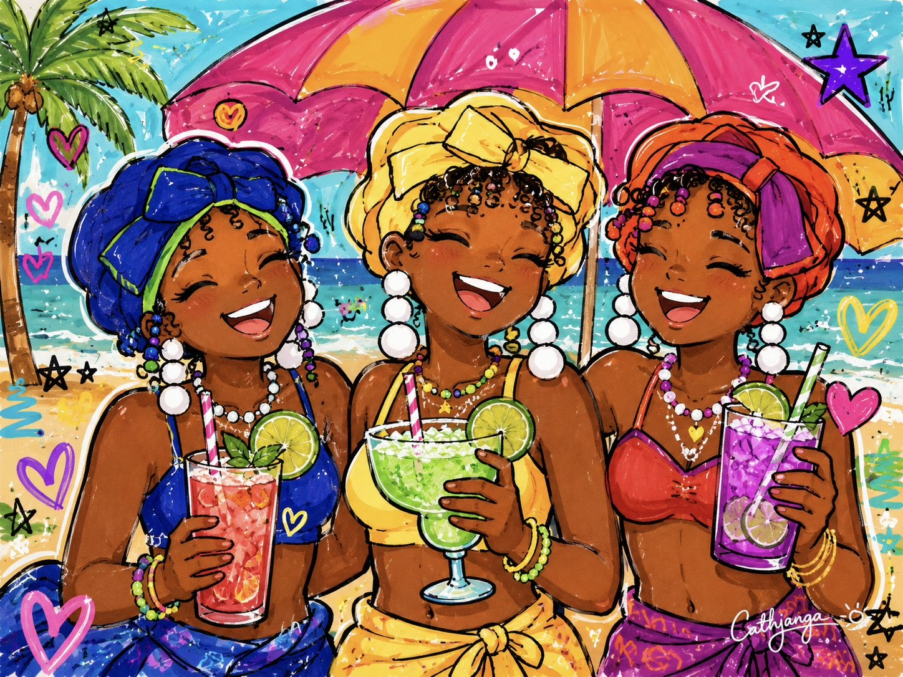
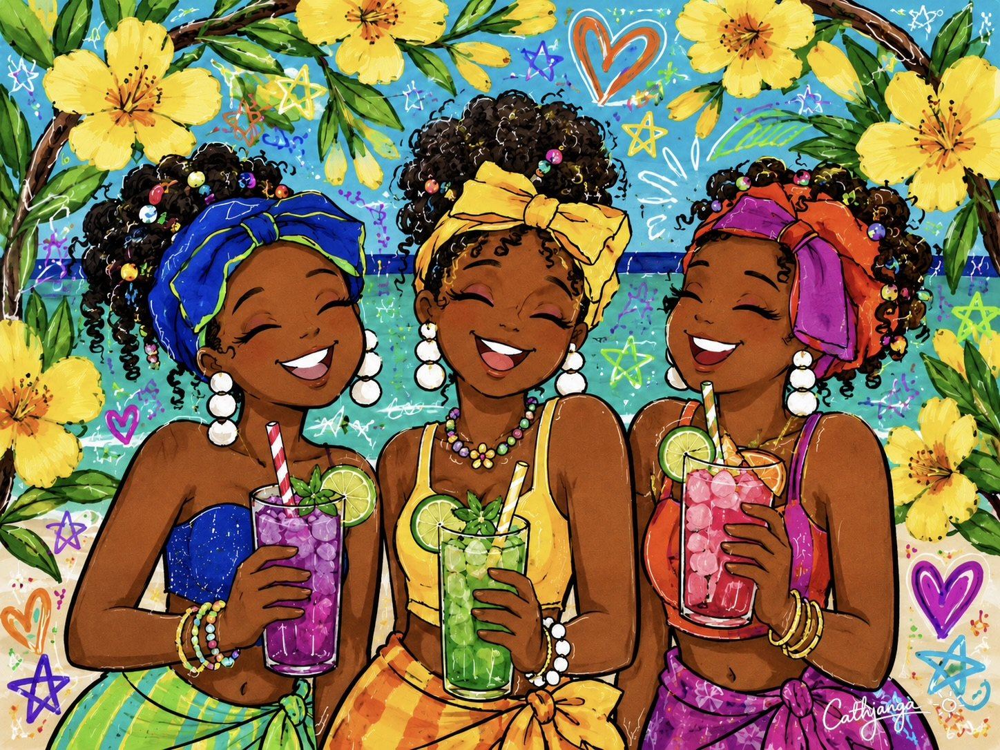
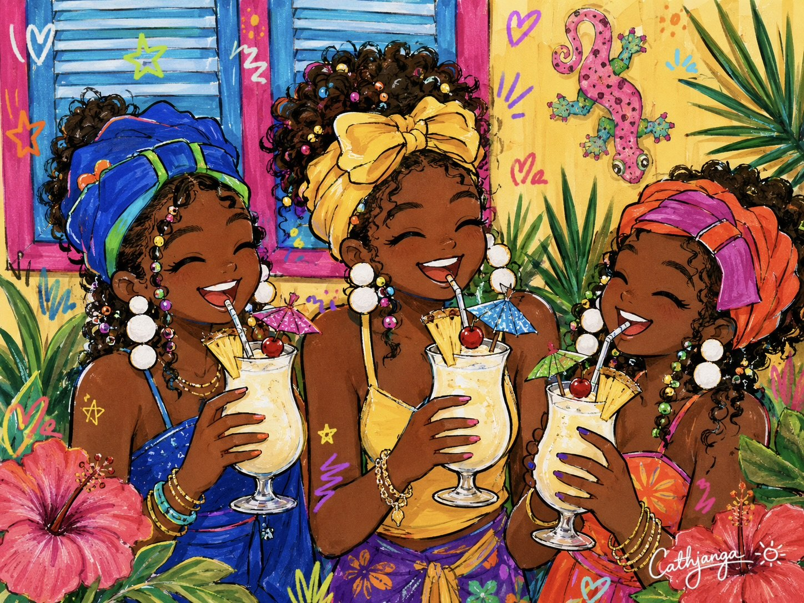
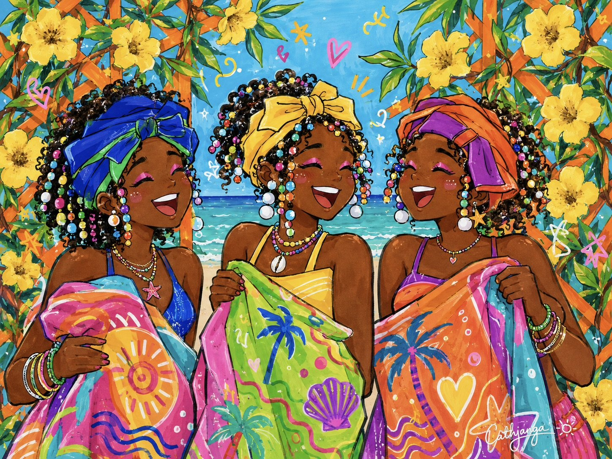
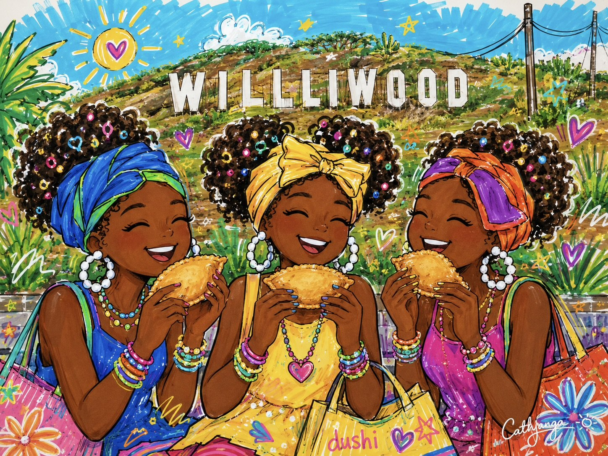
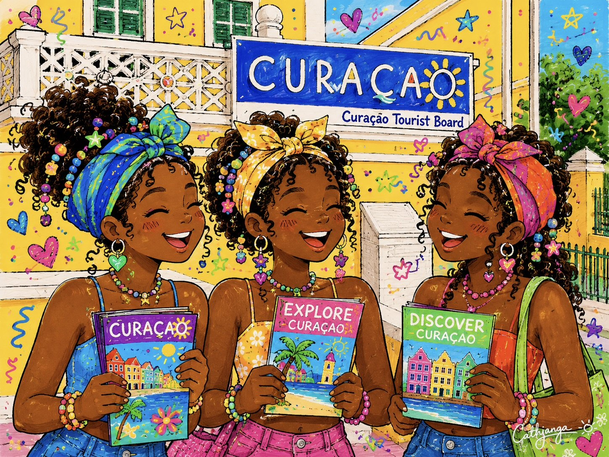
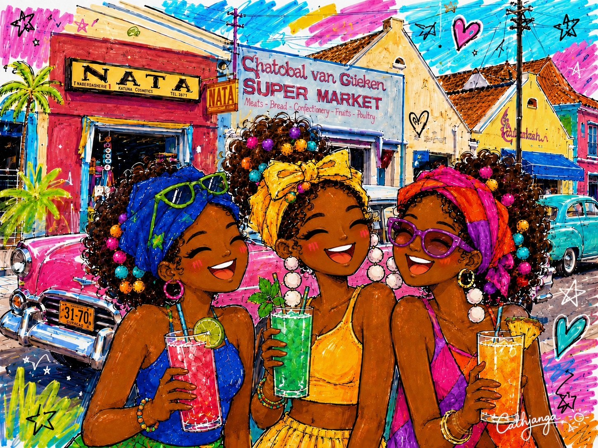
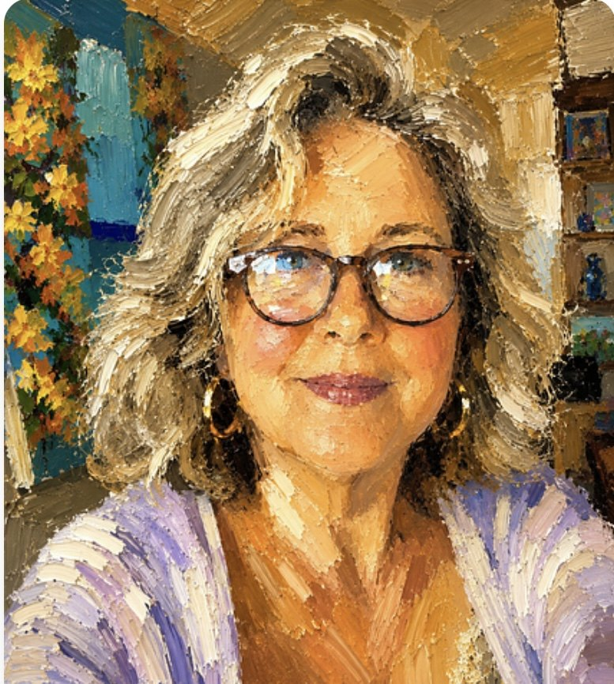

Colorful art. Caribbean soul. ♡
A colorful world inspired by friendship, island memories and the everyday joy of Curaçao.
EXPLORE THE ART →
Three friends. One Caribbean soul.
Born from my love for Curaçao, the Cathjanga Girls celebrate friendship, confidence and the beauty of being seen.
Three joyful Caribbean girls, growing up surrounded by color, culture and sunshine — proudly being themselves.
ART THAT MAKES YOU SMILE







Hi, I’m Catharina Janga — the artist behind Cathjanga Girls.
Born and raised on the Caribbean island of Curaçao, I grew up between two cultures, with an Antillean father and a Dutch mother. The colors, warmth and traditions of island life have stayed with me and continue to inspire everything I create.
Through Cathjanga Girls, I celebrate women and girls of color — their joy, strength, friendship and the beauty of being seen. My work brings together memories of Curaçao, everyday happiness and my love of bold, joyful color.
After retiring, I rediscovered my creative passion and began building the colorful world of Cathjanga Girls, combining my own creativity with the possibilities of AI.
For me, art is a way to tell stories, preserve memories and put a little more happiness into the world.
“More color in the world, more joy in everyday life.”
Say hello to Cathjanga.
Questions, collaborations or just want to share a little Curaçao sunshine?
Stay in the Cathjanga Loop
New art, colorful stories and a little Curaçao sunshine — straight to your inbox. ☀️🌴